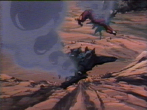
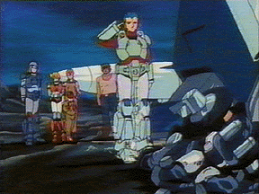

It is a wet, rainy February evening as you and your fellow resistance fighters huddle together for warmth around a small fire located in some godforsaken part of North America. The year is 2045, for anyone who's still keeping count, and the planet Earth is about to begin it's 10th year of occupation by the Invid. The cold, dark evening reflects your mood as you sit and slowly drink your dirty rainwater, and inevitably your mind starts to review the events of the last decade as you wonder how the war could have possibly gotten this bad...
Things weren't always so hopeless. In fact, back in 2038 it looked like humanity had triumphed against impossible odds and had kicked the Invid Regis off Earth forever. You and a couple of your friends were actually there in the famous Battle of Reflex Point, fighting alongside the troops of the REF Jupiter Fleet, attempting to penetrate Reflex Point, the central Invid hive itself. The "final" battle was particularly fierce, and many of your friends lost their lives that day. But then at the height of the conflict, when it looked like the tide of battle would turn against humanity yet again, a miracle occurred. A fiery phoenix, brighter than the sun, burst out of Reflex Point and flew into the night sky. The image of the bird was so brilliant that it lit up the entire hemisphere, and all over the world people claimed they could feel a shudder run through them as the apparition left the Earth. And when the phoenix had vanished, so had the Invid. All those scouts, troopers, pincers, and battloids were simply gone. The only remaining evidence that the Invid had even occupied Earth at all were some abandoned and empty hives that were rapidly crumbling into dust. Of course, almost the entire Jupiter Attack Group had been wiped out as well, but it looked like humanity had won. After three brutal years, Earth was finally free. Or so it seemed.
Rumors flew as to what exactly had happened that day. Some people said that Lt. Scott Bernard and his freedom fighters had actually managed to get into the Regis' central chambers somehow, and actually convinced the Invid Queen to leave Earth peacefully. Others said that a crack team of REF Commandos flying modified VAF-7A Shadow Fighters had penetrated the hive and killed the Regis, and that the phoenix image was actually an aftereffect of her death. You didn't give the matter much thought, however, and gladly took part in the victory celebration that went on for almost a week. After things calmed down you said good-bye to your companions, mounted your Cyclone, and returned to the village that you considered home. You were given a hero's welcome upon your arrival.
After that life seemed to return to normal. You worked together with the men and women of your village to rebuild and repair the damage from the war, and slowly the wounds and scars of many battles began to fade. You routinely took trips to other villages in your area to trade goods, and heard many success stories during your travels about how the world was finally getting back on its feet. The surviving ships and troops from the REF Jupiter Fleet were helping to repair cities and re-establish global communications, and there were rumors of a conference scheduled for next year in New York City to try and form a new world government. You didn't much care about that, however; you were perfectly happy with your little corner of paradise.
But fate wasn't that kind. One sunny summer morning several months later, the daily news reports broadcast by the orbiting REF starships to villages all over the world suddenly stopped without warning. In addition, the land-line communications that had been established with major cities miles away went dead for no apparent reason. You and your fellow townspeople could find no explanation, when one person's random channel searching in the lower bands finally turned up a signal. And the words that came out of the small radio speaker that day instantly chilled your soul...
"...it was found on the margins of a farm in the area. We observed it for an hour or so, before it was done with whatever it was doing and took off. When we inspected the area where it'd been, we found Flowers of Life had somehow sprouted there. They were about a couple weeks old."
"You mean you saw an Invid Shock Trooper in the area?"
"Affirmative. God help us..."
 Several minutes later a blood-curdling scream from outside the building shook you out of your state of shock. Running out of the town hall, you immediately realized what was causing the townspeople to run away in terror; flights of Invid Scouts and Troopers flew in formation overhead, seemingly oblivious to the town below them. Fortunately your Cyclone was stored elsewhere and not generating protoculture energy, or you would have probably been killed that day. Several other towns in the area tried to attack the invid, and were wiped out in minutes. Without warning, the Invid had returned and reclaimed what they had left. You felt like the last few months had been a happy, escapist dream, and you were once again waking up to the cold reality of war.
Eventually word worked its way to you through the village that the Resistance was reforming to combat the new Invid invasion, and that a group was gathering in a remote area a hundred miles away. You decided to leave your town and rejoin the Resistance, as you felt your continued presence put your friends and relatives in danger. So you put on your CVR-3 body armor, slapped your last few protoculture cells into your Cyclone, and went back into the war. You quickly found a Resistance group to join, and were surprised at how quickly the skills and tactics of guerrilla warfare came back to you. Despite the initial shock and despair the Invid's return had caused, morale was very high at first. There seemed to be less Invid mecha around and fewer hives, and those Invid you encountered followed the same dumb tactics they had in the past, allowing you and your friends to outguess your enemy and pull off several impressive raids, ambushes and counterattacks. Things were going well, but you couldn't shake the feeling in the back of your head that somehow this was TOO easy, and that something more sinister was in the air. Still, you kept your thoughts to yourself as your Resistance group continued to try to be a major thorn in the Invid's side.
Four years passed, and the early optimism of your group gave way to fatalism and despair. Although the Invid presence on Earth appeared smaller, none of your strikes seemed to do any good. No matter how many Invid you knocked out in a raid or ambush, there always were more ready to take their place the next day. Also, new lights began appearing in the night sky. Sparkling like stars but moving too fast to be constellations, you deduced that they could only be orbiting fortresses constructed by the Invid for some purpose which you could not guess at. The idea of a network of hives floating above the Earth made you fidget nervously in your sleeping bag at night. Meanwhile, more and more of your friends were killed in action, while supplies and new recruits slowed to a trickle.
 Worst of all were the stories that you were hearing, of entire towns and cities wiped out or enslaved, and of more and more resistance groups being captured or killed. Even the famous Rook's Knights, led by war heroes Rook Bartley and Lancer, were rumored to have been killed in an ambush (or captured and mutated into hideous creatures, depending on which version of the story you heard). Plus there was an overwhelming feeling of abandonment flowing through the Resistance. Where was the REF? Why weren't they arriving in starships like they had in the past, with new equipment, soldiers, and supplies to keep the resistance going? Had the Invid somehow destroyed Tirol and all the heroes like Rick and Lisa Hunter, Max and Miriya Sterling, and others were all dead now? Or had they decided that the cost to retake Earth was too high, and abandoned the planet to Invid domination? The sparks of hope still existed among your group, but they were growing fainter every day.
Then the war began to heat up again. Finally, after long years of waiting the REF once again returned, but not in the form of a huge space fleet this time. Instead, a small group of ships and men calling themselves the REF Icarus Recon Mission arrived, with their goal being not to defend or liberate the planet Earth, but instead to observe this new Invid force and eventually report back to Tirol with their findings. This put you off at first; why was the REF wasting time with reconnaissance when people were dying here daily? Still, Icarus brought with it skilled troopers and technicians, as well as much needed supplies in terms of protoculture cells, ammo, fuel, and new mecha. Most of all, Icarus brought much-needed hope to the Resistance. It proved to people that the REF at Tirol had survived, and were still trying to help Earth in any way that they could.
But on the other hand, the Invid were undergoing a terrifying metamorphosis of their own. Most of the older Invid mecha that you had become so used to fighting disappeared overnight, and in their place appeared devastatingly powerful new designs, packed with enough weapons and firepower to easily outclass the older mecha the Resistance was still using. More sinister however was the change in Invid tactics. No longer did the Invid blindly throw themselves into combat; instead they began to learn stealth and subtlety, and surprised and wiped out several resistance groups with well-planned diversionary attacks. This new sneakiness shocked you and your companions, giving you the strange feeling that someone NEW was leading the Invid this time around. However, events really started turning towards the worst in late 2044, when your group received word that the Icarus fleet had been destroyed in orbit by coordinated strikes from Invid Space Fortresses. It seemed as if the last hope for humanity's survival had just been snuffed out by the unseen hands of the new Invid overlords.
Probably by now any sane man would have given up, thrown down their weapons and prostrated themselves in front of the nearest Invid to beg for mercy. There seemed little point to fighting on against such overwhelming odds. But then you had a experience that reaffirmed your dedication to the Resistance. While on patrol one day, you discovered a dirty, wounded, scared little girl all alone in the forest, trying desperately to hide in the brush. The girl was so exhausted that she collapsed in your arms without even telling you her name. You rushed her back to your camp where your medic cleaned her up, and you were shocked to find that after the medic had cleaned the girl's face that you recognized her! She was from your home town, now hundreds of miles away! Feverish and in pain, the girl told you about how the Invid had marched into your town and rounded up everyone there. Any who resisted were killed instantly. Worse yet, the survivors were separated into those who could and could not work, and the weak were exterminated while the strong watched. Then the slaves were led away in chains to farm protoculture for the Invid. The girl had escaped and fled the Invid and their frags, and by some miracle managed to find you. However, despite your medic's best efforts, the girl gave into her wounds and exhaustion and died during the night.
The next morning you were a changed person. Gone was the despair and fatalism, and in its place was a grim determination that while you lived, you would continue to fight so that humanity didn't simply pass into extinction as Invid slave farm workers. This you swore over the girl's grave, that you would continue to fight until all young people like her were safe and free.
The arrival of your team's bio-mechanic at the campfire interrupts your grim reminiscing. He announces that he has finished repairing all the damage from your last raid, and has used up the last of your group's surplus fuel and ammo to restore the mecha to full operating capacity. "Your mecha are ready to rumble," he announces, "but there ain't no spares anymore so watch yourselves." Your group leader starts discussing possible targets to move against in the next few days. You flex your fingers as the faces of all the friends and allies who have died before you flash through your mind, and then you focus yourself on the plans your group is discussing. Soon it will be time to make the Invid pay for what they've done.


 |
http://www.mcs.net/~deitrich/index.html deitrich@mcs.net |
Last Updated: |